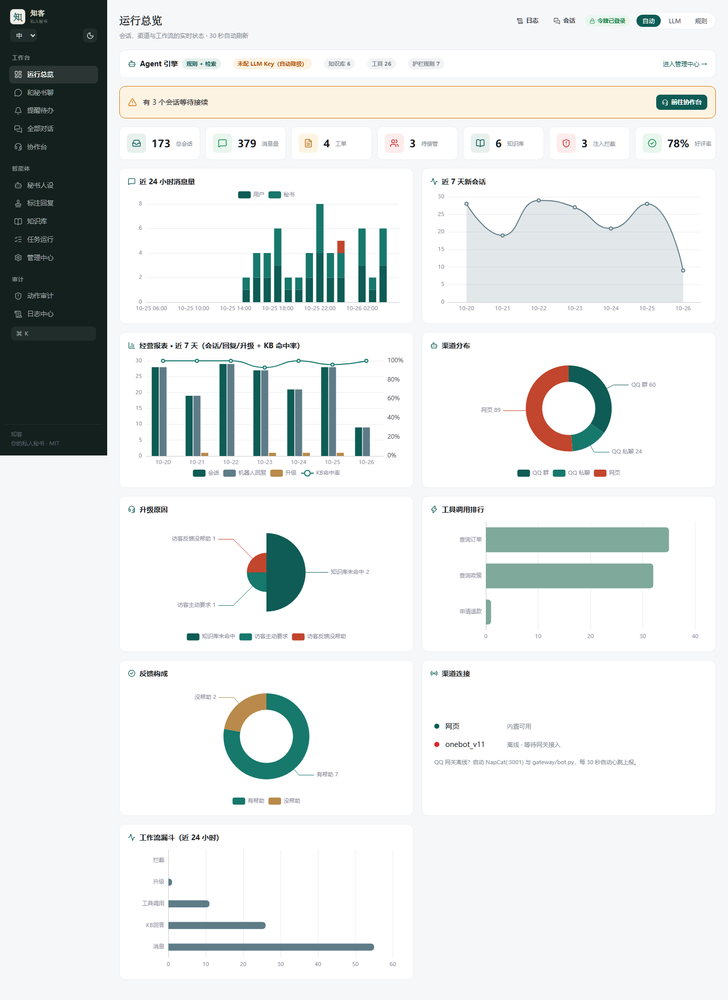
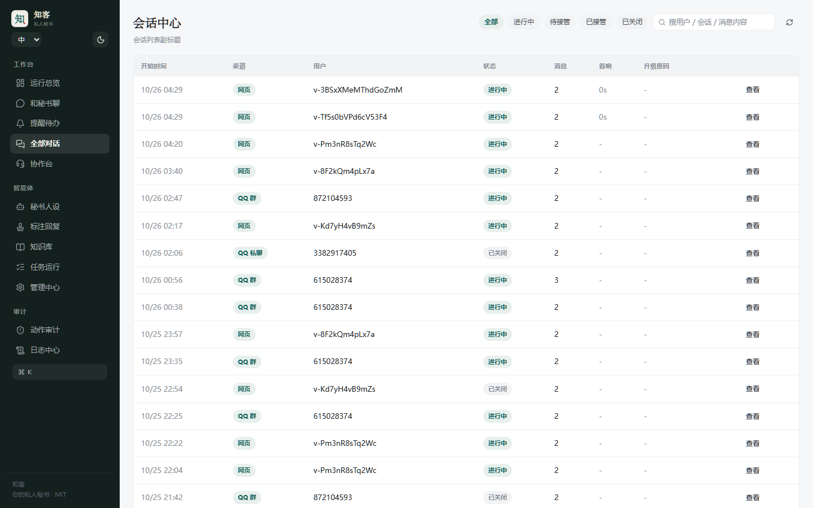
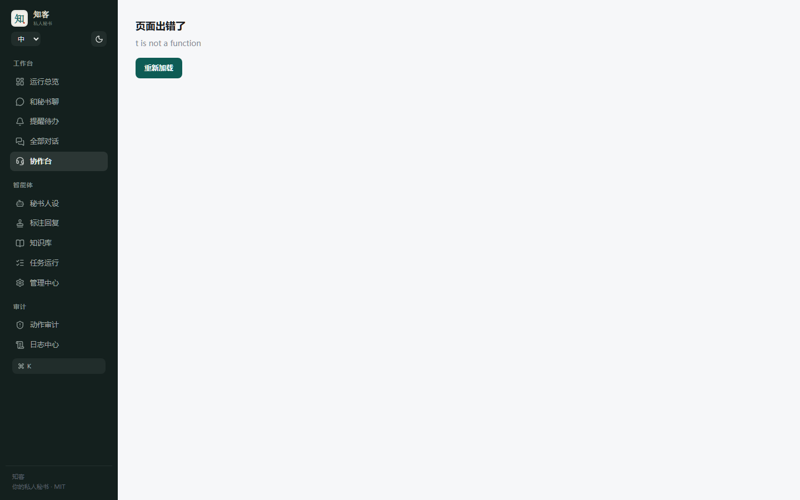
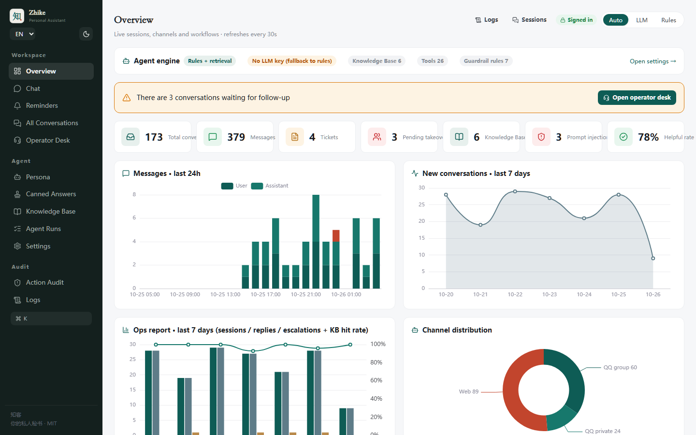

Your personal assistant, self-hosted.
你的私人秘书，自己托管。
Zhike is an agent harness for personal assistants: OpenAI function calling, MCP, a ReAct loop, hybrid retrieval (FTS5 + vectors with RRF), long-term memory, reminders, tiered action permissions and an append-only audit chain — wired to QQ group/private chat and a Web console.
知客是一套可自托管的个人助理 Agent 底座：原生 function calling、MCP、ReAct 循环、混合检索（FTS5 + 向量 RRF）、长期记忆、提醒调度、动作权限分级与哈希链审计，QQ 群/私聊与 Web 控制台双渠道。
What you get
能做什么
Everything below is implemented and covered by tests — no roadmap items dressed up as features.
下面每条都已实现并有回归测试覆盖，不把路线图当成已完成功能。
Real tool calling
真工具调用
OpenAI function calling with automatic JSON fallback; 42 tools with backends that hide themselves when unconfigured.
原生 function calling，端点不支持时自动退 JSON；42 个工具，缺后端时自动隐藏而不是让模型撞墙。
Hybrid retrieval
混合检索
SQLite FTS5 BM25 plus optional BGE vectors, fused by RRF, with lexical fallback when the index fails.
SQLite FTS5 BM25 + 可选 BGE 向量，RRF 融合；索引故障自动退回字面检索。
Permissions and audit
权限与审计
L0/L1/L2 action tiers, forced approval for destructive actions, SHA-256 hash-chained audit verifiable in the console.
L0/L1/L2 动作分级，破坏性动作强制审批，SHA-256 哈希链审计可在控制台校验。
QQ, fully wired
QQ 深度接管
NapCat + OneBot v11 + NoneBot2: mute, kick, card, rename, notice, upload, recall, approvals, poke, essence, forward.
NapCat + OneBot v11 + NoneBot2：禁言、踢人、名片、群名、公告、传文件、撤回、审批、戳一戳、精华、合并转发。
Bot-to-bot loop guard
乒乓循环护栏
Deterministic rules detect goodbye loops, echoes, question floods and instant ping-pong, then mute the peer.
确定性判据识别道别复读、回声、问题连发与秒回连击，命中即静默对方。
Runs without a key
没 Key 也能跑
No LLM key? The pipeline degrades to rule plus retrieval answering instead of failing.
不配 LLM Key 也能跑：自动降级为规则 + 检索应答，不是直接报错。
Design
核心设计
Boring parts done properly: each layer names the standard it follows.
把不性感的部分做扎实：每一层都标明依据的成熟标准。
| Component | 部件 | Implementation | 实现 | Standard | 依据 |
|---|---|---|---|---|---|
| Tool calling | 工具调用 | OpenAI function calling, JSON fallback | OpenAI function calling，自动退 JSON | OpenAI API spec | |
| Tool exposure | 工具暴露 | core/mcp_server.py | core/mcp_server.py | Model Context Protocol | |
| Multi-step | 多步执行 | ReAct PLAN → ACT → OBSERVE with budgets | ReAct PLAN → ACT → OBSERVE + 预算 | ReAct + Agent SDK budgeting | |
| Retrieval | 检索 | FTS5 BM25 + vectors, RRF fusion | FTS5 BM25 + 向量，RRF 融合 | BM25 / RRF | |
| Observability | 可观测 | Optional OTel GenAI spans, metrics, structured logs | 可选 OTel GenAI span、指标、结构化日志 | OTel GenAI conventions | |
| Audit | 审计 | SHA-256 hash chain | SHA-256 哈希链 | Append-only audit chain |
Quick start
快速开始
One address serves both the console and the API.
一个地址 = 控制台 + API。
git clone https://github.com/badhope/zhike && cd zhike
python -m venv .venv && .venv/Scripts/pip install -r requirements.txt
cp .env.example .env # fill USER_LLM_* / ADMIN_TOKEN as needed
cd frontend && npm ci && npm run build && cd ..
CS_AGENT_STATIC_DIR=frontend/dist python -m uvicorn core.main:app --port 8010
# → http://localhost:8010QQ setup: docs/QQ-LOGIN.md · Docker and deployment: DEPLOY.md
QQ 接入见 docs/QQ-LOGIN.md，Docker / 反代 / 免费部署见 DEPLOY.md
Screenshots
界面截图
Captured against a generated demo database, not hand-drawn mockups.
基于独立演示库实拍，不是手绘 mockup。




Mirrors
镜像仓库
The same tree, published to five repositories. Pick whichever is fastest for you.
同一套代码同步到五个公开仓库，哪个快用哪个。